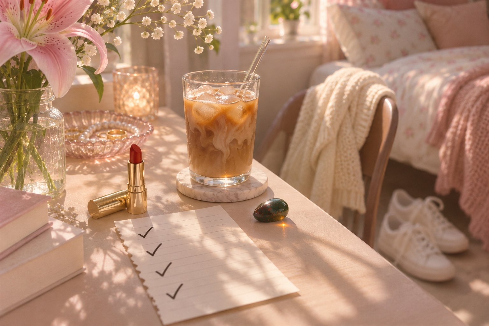

You're the girl who says "watch me" when someone tells you that you can't do something, then secretly wonders whether you're good enough. Everyone thinks you're fearless. You find that slightly hilarious, considering what goes on inside your head. Aries (March 21 to April 19) has a birthstone called bloodstone. Its colors might explain a few things.

The Aries everyone knows
Why Does Everyone Think Aries Is So Fearless?
You're already halfway through making plans while everyone else is still deciding whether to go out.
You're the friend who sends the first message, starts the awkward conversation, and orders something completely unfamiliar just because the name sounds interesting.
Someone makes a rude comment about your best friend? Well, suddenly you have a little speech prepared.
You also have a strange talent for turning a perfectly ordinary afternoon into a story worth telling.
Every group chat needs someone brave enough to say what everyone else is thinking. That person is usually you.
The Aries nobody sees
What Are You Actually So Afraid Of?
For someone who supposedly doesn't care what people think, you remember their exact words remarkably well.
You want to be someone's first choice without having to ask. You want someone to notice when you're unusually quiet.
And yes, you sometimes practice being disappointed before anything has even happened.
In George Kunz's 1913 book The Curious Lore of Precious Stones, Aries's stone is bloodstone.
Its dark green mirrors your hidden tenderness, while its tiny red flecks resemble the little flashes of feeling you struggle to hide.
There's something surprisingly delicate about you.
The girl behind the fire
Why Does Aries Get Angry When She's Actually Hurt?
You say you're fine with such confidence that people actually believe you.
Slightly inconvenient.
You can forgive someone over breakfast, laugh with them at lunch, and still remember what they said three Thursdays ago.
When you get upset, your words sometimes arrive before you've figured out what you're feeling. By the time you understand why you're hurt, everyone else is already discussing your temper.
People remember how loudly you defended yourself. They rarely stop to consider how much something must have mattered to you.
When the world goes quiet
What If Someone Else Could Be Brave for You?
It's 2 a.m. You've opened the same conversation four times, typed a message, deleted it, and decided to go to sleep.
Except now you're making a playlist.
You think about all the things you want to become, the places you want to go, and whether your favorite person will still be there when you get there.
Sometimes you wish someone would take the lead for once. Make the plans. Ask the difficult questions. Notice the little things.
Underneath all that fire, you just want someone else to be brave for once.
When your green-and-fire side wants out, Gemflow turns emerald into slow-moving light on your phone, so you can watch that color for once.
Bloodstone is the Aries birthstone, dark green with tiny red flecks, like the tenderness and fire living quietly inside you.